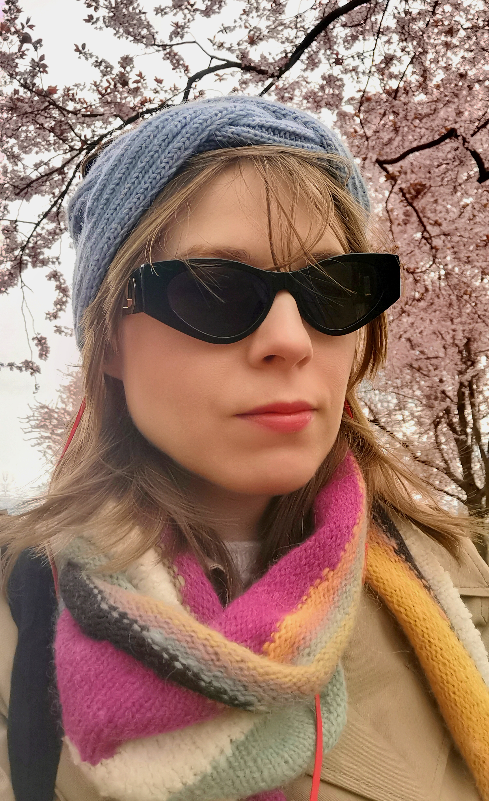
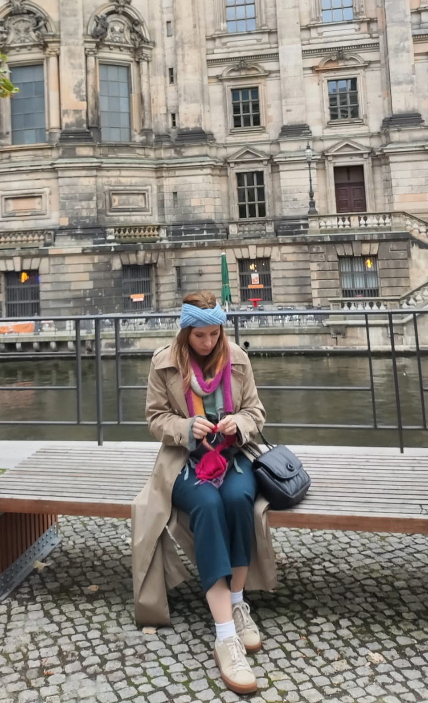
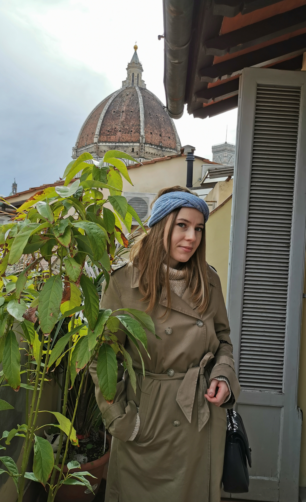
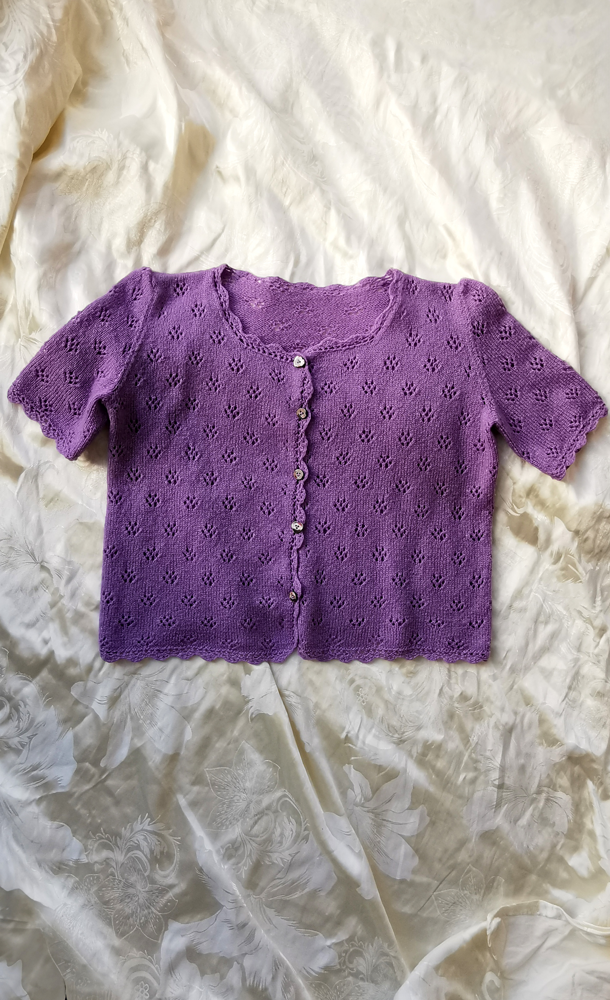
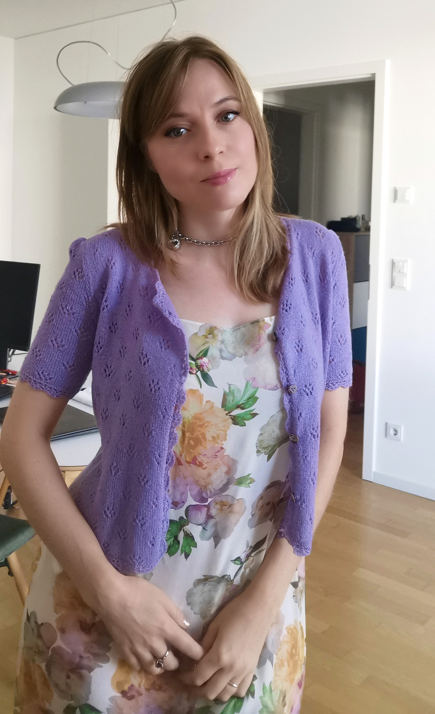
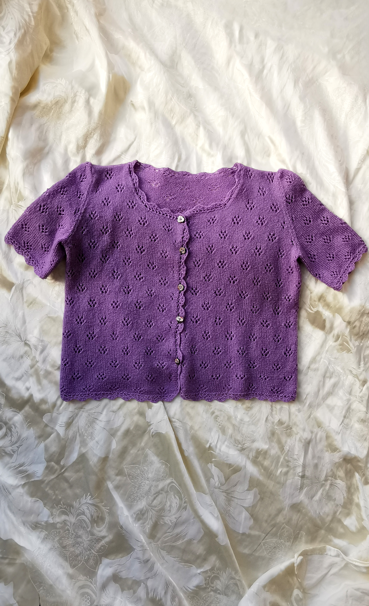
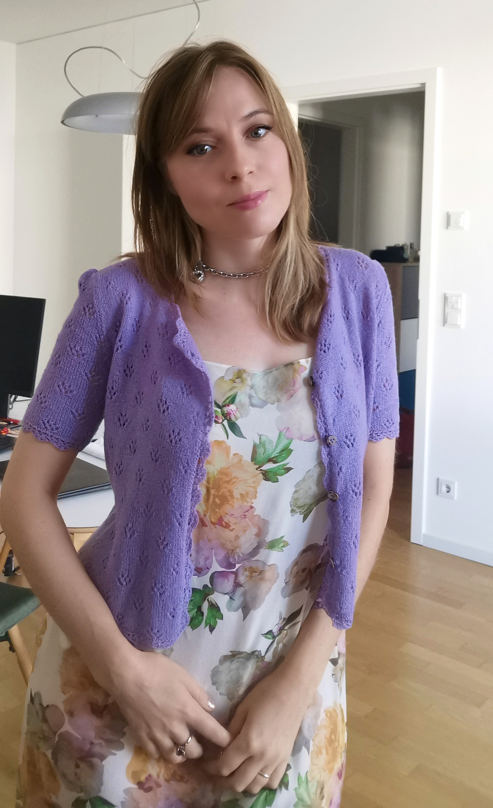

Knitted Headband with a Braid Pattern
Original Yarn: Katia Cotton-Merino Fine - 70% cotton, 30% Merino Extrafine
Alternatives:
Sandnes Garn Duo – 55% merino wool, 45% cotton, similar fiber blend and gauge
Lana Grossa Cotone-Merino – cotton and merino blend with soft texture
Drops Cotton Merino – 50% cotton, 50% merino, excellent stitch definition and elasticity
Lang Yarns Yak – 70% virgin wool (Merino Extra fine) and 30% yak
Lana Grossa Lucida – 58% virgin wool (Merino) and 42% viscose
Needles: 3.5–4 mm
Gauge: 28 stitches = 10 cm in rib
Head Circumference: +/- 58 cm and adjustments for other sizes
Yarn Amount: approx. 100 g
This knitting pattern is a digital download in PDF format and in English omly!
Price €4 EUR
Gemäß § 19 UStG wird keine Umsatzsteuer berechnet




 


